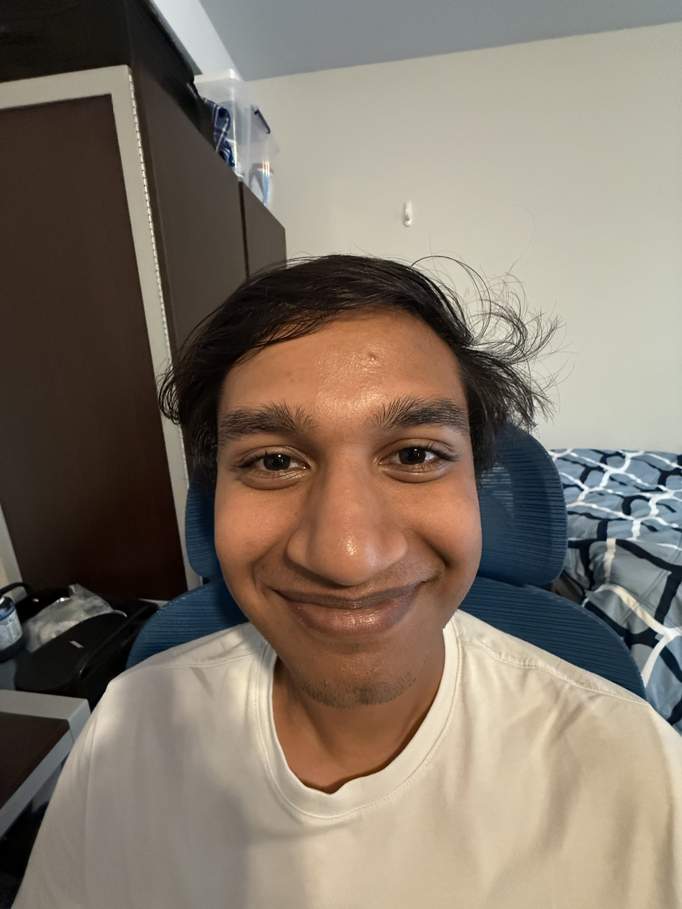
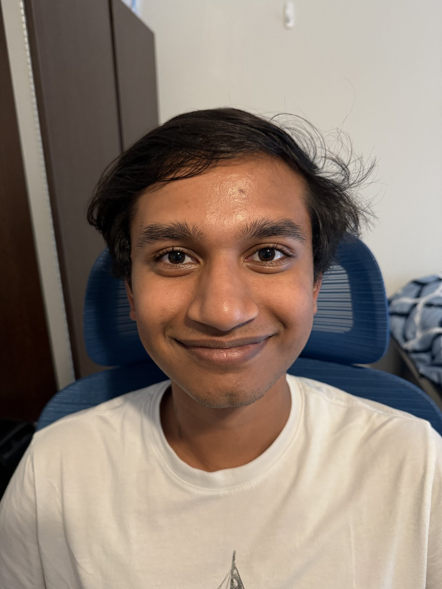
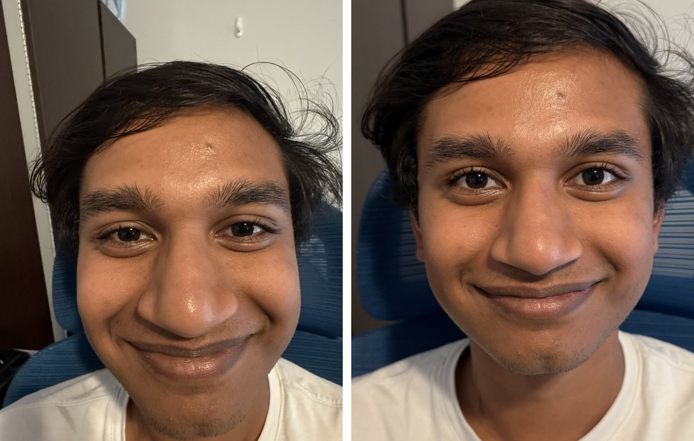
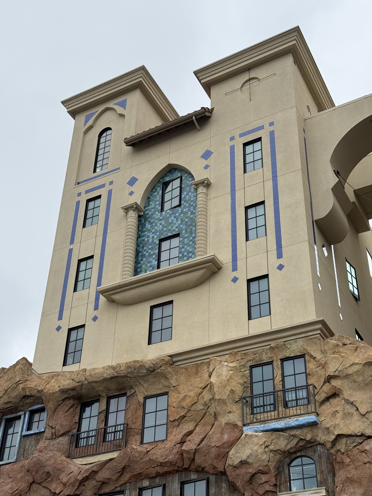
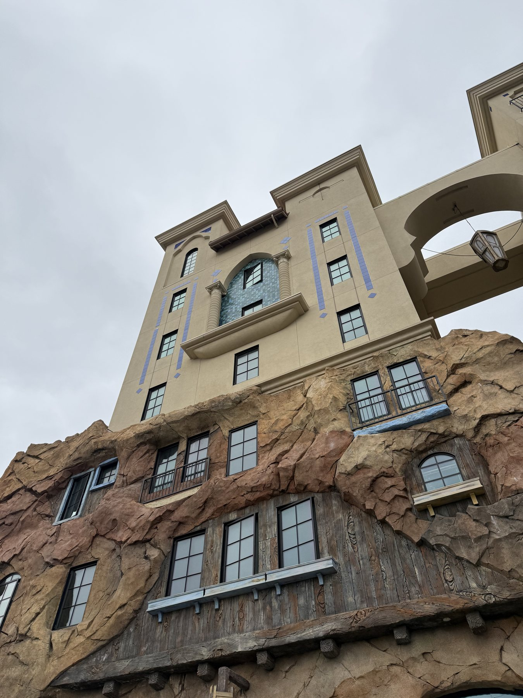
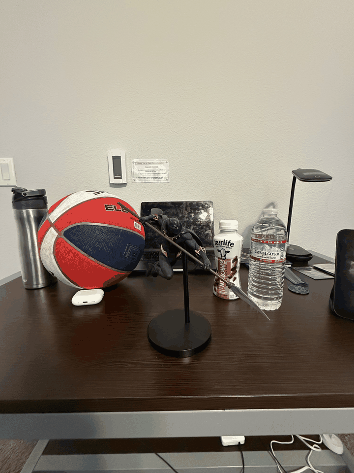

Project 0 · CS180/280A · Fall 2026
Becoming Friends
with Your Camera
Three small experiments in the same idea: where you stand decides how a scene looks. Focal length only decides how much of it you keep.
Part 1
Selfie: the wrong way vs. the right way
Two portraits of the same face, framed to the same size. The first is a close selfie on the 0.5× ultra-wide. For the second I backed away and zoomed to 1× until the face filled the frame again. Nothing else changed — same subject, same light, same pose.



Why
In a perspective image, size falls off as 1/depth — so what matters isn't how far away the camera is, it's the ratio of distances to the near and far parts of the face. A head is roughly 10 cm deep, so the nose sits at d while the ears sit at d + Δ:
nose / ears = (d + Δ) / d = 1 + Δ/d
How far back did I actually go? I didn't measure it at the time — but the two photos do. Matching features across the pair, the face comes out the same size in both (0.98×) while the lens went from 14 mm to 24 mm equivalent — 1.71× longer. Holding the subject's size while lengthening the lens by 1.71× is only possible if the camera moved ≈1.7× further away.
Put numbers on it: from a typical arm's length of ~35 cm, that 10 cm of head depth renders the nose about 29% bigger than the ears. At 1.7× that distance it's 16%. The distortion roughly halves — which is exactly the difference you can see in the crop above.
So the zoom didn't fix the face — moving back did. Zooming only restored the framing. That's also why "85 mm is a flattering portrait lens" is a bit of a lie: the lens is flattering because it forces you to stand far enough away.
Part 2
Architectural perspective compression
The same experiment run backwards, on a building instead of a face. First I stood far away across an open space and zoomed all the way in. Then I walked toward the building and shot it wide, stopping when the facade filled roughly the same fraction of the frame.


Why
Same arithmetic, bigger scale. If the facade runs 20 m away from me in depth, then from 100 m back the far corner is only 17% smaller than the near one — the wall looks almost flat. Walk in to 15 m and the far corner drops to 43% of the near one, and the lines converge hard.
far / near = d / (d + L)
So the telephoto didn't compress anything — distance did. The long lens just let me stand that far back and still fill the frame.
Part 3
The dolly zoom
Parts 1 and 2 change the viewpoint and let the subject size change. The dolly zoom — Hitchcock's Vertigo shot — does the opposite: it changes the viewpoint and zooms at the same time, pinning the subject to a fixed size so that the only thing left moving is the background.
I shot a sequence of stills, stepping the camera back and zooming in between each frame to keep the foreground subject the same size, then assembled them into a GIF.

Subject locked. Background breathing.
The frames
Every still that went into the GIF, in order. Click any frame for the full-size image.
Why
Keeping the subject the same size means the focal length has to track the subject distance exactly (f = k·ds). The background sits a fixed distance D further back, so its magnification is:
m_bg ∝ f / (d_s + D) = k / (1 + D/d_s)
As I dolly back, ds grows, D/ds shrinks, and the background grows — rushing in behind a subject that never changes size. Same fact as Parts 1 and 2, just made visible as motion: perspective is set by where the camera is, and the zoom is only there to hold the subject still so you can see it happen.
Takeaway
Zooming is just a crop — it scales everything by the same factor and can't change the relative size of two things at different depths. Only moving the camera does that, and that's all "perspective" really is.
A bulbous selfie nose, a flattened building, and the Vertigo shot are the same equation read three ways. The version I'll actually remember: pick the distance first for the look you want, then pick the focal length to fix the framing.